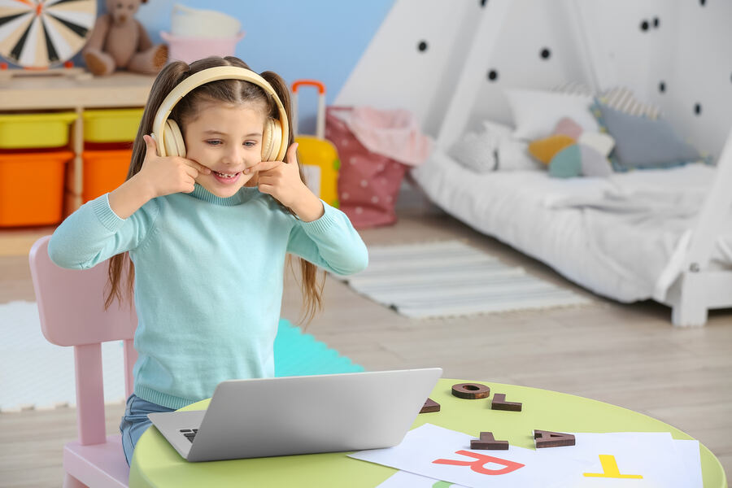

En nuestro centro estamos especializados en evaluar, diagnosticar y tratar trastornos del lenguaje, la comunicación, la voz y la deglución. Trabajamos con personas de todas las edades, desde niños hasta adultos y personas de la tercera edad.
Clic para informarteOfrecemos terapia online y presencial para que nuestros pacientes elijan la modalidad que mejor se adapta a su situación personal y necesidades.

Tratamiento con un logopeda profesional de forma remota, mediante una plataforma segura y confidencial. Videoconferencia en tiempo real y herramientas interactivas para mejorar las habilidades de comunicación y lenguaje, con la comodidad de hacerlo desde casa.
En nuestro centro, ubicado en Barcelona, logopeda y paciente trabajan juntos cara a cara para evaluar y tratar los trastornos del lenguaje, la comunicación, la voz y la deglución. Un enfoque cercano, personalizado y colaborativo.
Detectar y tratar a tiempo transforma el proceso. No esperes más.
La detección precoz de dificultades en el lenguaje es esencial: cuanto antes se identifiquen y aborden estos problemas, mayores serán las posibilidades de mejorar el desarrollo lingüístico y comunicativo del niño o adulto.
Una intervención oportuna reduce el impacto a largo plazo en el rendimiento académico, las relaciones sociales y la calidad de vida — y puede evitar complicaciones secundarias como baja autoestima o ansiedad.
Vídeo: Fundación Salud Infantil — "Signos de alerta en el desarrollo del lenguaje"
Además de logopedia, ofrecemos sesiones online para padres y madres.
Aprende a ayudar a tus hijos a concentrarse y a crear un hábito de estudio real en casa. Sesiones online, 30€/hora, bajo disponibilidad.
Ver másTe brindaremos información detallada y sin compromiso sobre nuestros servicios y cómo podemos ayudarte.
Contactar por WhatsAppArtículos y recursos sobre comunicación, lenguaje y desarrollo.